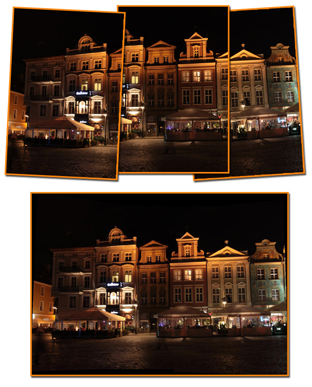

Görüntü birleştirme ile geniş açılı fotoğraflar
November 26, 2011
Neredeyse bütün kamera ve görüntü işleme yazılımlarının sahip olduğu görüntü birleştirme (panoramik çekim) özelliğinin nasıl çalıştığını merak ettiniz mi? Bu yazıda en basit anlamda görüntü birleştirmenin nasıl yapılabileceğine değineceğim, kaynak kodları ve daha detaylı raporu yazının ekinde bulabilirsiniz.
Birleştirilecek görüntüler farklı perspektiflerden çekilmiş olduğundan doğrudan görüntüleri uç uca ekleyerek güzel sonuçlar almamız pek mümkün değil. Bu yüzden ilk olarak görüntülerin perspektiflerini birbirine göre hizalamamız gerekiyor. Neyi neye göre hizalamamız gerektiğini bulmak için öncelikle ardışık iki görüntünün kesiştiği alandaki bazı ortak noktaları buluyoruz.
Ortak Noktaların Bulunması
Ortak noktaları SIFT veya SURF gibi çeşitli anahtar nokta tanımlayıcı algoritmalar yardımı ile otomatik olarak bulabiliriz ancak bu örnekte karmaşıklığı artırmamak için noktaları el ile işaretliyoruz. Örneğin iki görüntüde de yer alan binaların köşe noktalarını işaretleyebiliriz.
Görüntülerin Hizalanması
İlk görüntüde bulduğumuz ortak noktalardan oluşan matrise X, bu noktalara karşılık gelen ikinci görüntüdeki noktaların koordinatlarından oluşan matrise x diyecek olursak bu noktaları arasında eşleşme yapmamıza olanak sağlayacak “X = Hx” eşitliğini sağlayan bir dönüşüm matrisi (H) bulmamız gerekir (daha detaylı matematiksel açıklama için ekteki rapora bakabilirsiniz).
Dönüşüm matrisini bulduktan sonra ilk görüntüdeki bütün noktaların koordinatlarına bu dönüşümü uygulayarak hizalamadan sonra olması gereken koordinatlarını bulabiliriz. Bu şekilde bir dönüşüm uygulandığında bir bakıma noktalara birebir eşleme yapmış oluyoruz. Bu durumda görüntüdeki toplam nokta sayısı değişmemiş oluyor ve küçük bir görüntüden daha büyük bir görüntüye eşleme yaptığımızda elde edilen piksellerde boşluklar bulunması muhtemel olacaktır. Bu sebeple kaynak görüntüdeki her nokta için yeni değer hesaplamak yerine hedef görüntüdeki her noktanın olması gereken değerini interpolasyon ile hesaplamak (inverse mapping) daha mantıklı olacaktır.
Görüntülerin Birleştirilmesi
Görüntüler hizalandıktan sonra birleştirme aşamasında kesişen bölgelerde basitçe iki görüntünün ortalaması alınabilir veya yakın olan görüntünün ağırlığı daha yüksek olacak şekilde ağırlıklı ortalama alınabilir. Bu örnekte daha basit olması için kesişen bölgelerde en parlak pikselin değeri alınmıştır.
Görüntü işleme, Programlama